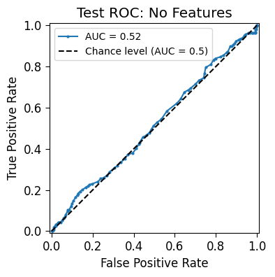
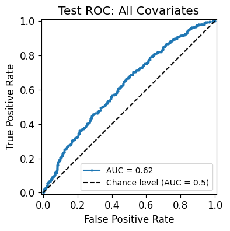

Diet Sodas: A Deep Dive into the Causal Effect of Artificial Sweeteners on Obesity
1 Abstract
The obesity epidemic remains a pressing public health concern in the United States, and many food and beverage companies have capitalized on this crisis by marketing products that appeal to consumers’ desire to lose weight. Among these, diet sodas have long been advertised as healthier alternatives to sugary beverages, often promoted on the basis that they contain zero calories. To achieve this, diet sodas are sweetened with non-caloric, and potentially addictive, artificial sweeteners such as sucralose and aspartame. Although these sweeteners do not contribute directly to caloric intake, several medical studies and expert analyses suggest that diet sodas may contribute to weight gain. This study aims to construct a comprehensive probabilistic graphical model (PGM) to estimate the causal impact of diet soda consumption on obesity, as measured by Body Mass Index (BMI). Using data from the National Health and Nutrition Examination Survey (NHANES) for the 2013–2014 survey cycle, this analysis provides a longitudinal view of participants’ dietary habits. Covariates related to each participant’s demographics, income, fitness regiment, weight history, and overall diet were controlled to understand a the true causal impact. Results from the PGM suggest that individuals who regularly consume diet soda have an increased probability of being obese. These findings offer important implications for public health policy, suggesting the need for stronger regulation of the diet beverage industry and greater encouragement of healthier drink alternatives for individuals struggling with obesity.
2 Introduction
Obesity is a growing public health issue in the United States, with the epidemic continuing to worsen each year. According to the Centers for Disease Control and Prevention (CDC), the majority of U.S. states reported an obesity prevalence of over 30%, indicating that nearly one-third of Americans have a Body Mass Index (BMI) of 30 or higher (Centers for Disease Control and Prevention (CDC) 2024). Although obesity is a nationwide concern, it is especially concentrated in the Midwest and South. In Texas, for instance, approximately 52% of males aged 15–24 were classified as overweight or obese in 2021. Even more striking, nearly 80% of men over the age of 25 in North Dakota were considered at least overweight. Future projections for the American obesity epidemic are more troubling. By the year 2050, it is estimated that one-fifth of children (ages 5–15), one-third of adolescents (ages 15–24), and two-thirds of adults (ages 25 and older) will be classified as obese (Institute for Health Metrics and Evaluation (IHME) 2024). While BMI is not a perfect measure of health—often misclassifying highly muscular individuals and senior citizens—it remains a broadly accepted indicator of population-level health trends. Although genetics may predispose some individuals to higher weight, obesity in the U.S. is primarily driven by the foods and beverages that Americans regularly consume.
The fast-paced American lifestyle encourages reliance on processed and ultra-processed foods, which are made affordable and accessible by the fast-food and packaged food industries. According to Dr. Leigh Frame—program director for the Integrative Medicine Programs and a clinical researcher at George Washington University—this dietary pattern is closely tied to weight gain, elevated fasting blood glucose, microbiome disruptions, and other health complications (Laster and Frame 2019). Regarding weight gain specifically, Frame and her colleagues cite a controlled inpatient study in which 20 adults were randomly assigned to follow either an ultra-processed or an unprocessed diet for two weeks. These diets were nutritionally matched in perceived calories, sugar, fat, fiber, and macronutrient content, yet participants on the ultra-processed diet consumed significantly more energy overall, particularly from carbohydrates and fats. This led to an average weight gain of 0.9 kg (p = 0.009), while those on the unprocessed diet lost a similar amount (p = 0.007) (Hall et al. 2019). These findings underscore the impact of food processing on energy intake and weight. While diet sodas are often marketed as a healthier alternative to sugary drinks, they remain ultra-processed and may pose similar risks.
Beverage companies often tout diet sodas as a health-conscious choice. For example, PepsiCo’s finance chief in 2023 claimed that aspartame-sweetened drinks “obviously have the benefit of being zero calorie” (Rajesh 2023). However, a careful look at the science reveals more nuance. In a 2022 meta-analysis of randomized trials, McGlynn et al. found that substituting low- or no-calorie drinks for sugar-sweetened sodas led to only a small average weight loss (about –1.06 kg) (McGlynn et al. 2022). By contrast, large cohort studies consistently link frequent diet-soda consumption with higher risks of weight gain, diabetes, and cardiovascular disease (McGlynn et al. 2022). In addition, Toews et al. (2019) reported that evidence from clinical and observational studies is generally low quality and shows essentially no long-term benefit of artificial sweeteners on weight (Toews et al. 2019). In fact, some data suggest diet-drink users may even compensate by eating more or experience altered metabolism—for example, sweeteners can disrupt normal appetite signaling and gut microbiota in ways that promote weight gain (McGlynn et al. 2022). Despite industry claims suggesting otherwise (Rajesh 2023), scientific reviews indicate that drinking diet sodas is not clearly protective against obesity and may be associated with lasting metabolic harms (McGlynn et al. 2022; Toews et al. 2019).
This paper explores the causal impact of diet soda consumption on weight gain, addressing a public health issue that remains largely shrouded in uncertainty. While many consumers believe they are making a healthier choice by switching to diet alternatives, the evidence presented here suggests that diet soda may cause more harm than good in the long term.
3 Data Gathering & Cleaning
All data used in this analysis were obtained from the National Health and Nutrition Examination Survey (NHANES), a nationally representative program that collects detailed information on the dietary habits and nutrient intake of U.S. residents. NHANES employs a rigorous methodology, compiling a wide range of data including demographic information, dietary intake, physical examination findings, laboratory results, self-reported questionnaire responses, and more. This study focuses on a subset of these variables—specifically demographics, financial status, physical fitness indicators, self-perceived diet quality, and weight history—as potential confounders.
To increase reliability, NHANES provides two non-consecutive 24-hour dietary recall datasets for each participant, spaced approximately 30 days apart. Although NHANES is conducted annually using consistent data collection protocols, the quality and completeness of post-pandemic data have declined. For this reason, data from the 2013–2014 cycle were selected for this analysis, though the methods described here are generalizable to other NHANES cycles.
The data cleaning process began with familiarization with NHANES food codes to accurately identify participants who reported consuming diet soda. Once these specific codes were isolated, participants were categorized accordingly. Relevant covariates were then merged using the SEQN variable, a unique identifier assigned to each participant. This integration enabled a structured and meaningful examination of diet-related patterns and outcomes. The table below outlines the names and definitions of specific variables used.
| Variable Name | Description |
|---|---|
| SEQN | Respondent sequence number |
| SODADRINKER | A boolean variable that identifies if a respondent drinks diet soda |
| BMXBMI | Body Mass Index (kg/m**2) |
| RIAGENDR | Gender of the participant |
| RIDRETH1 | Reported race and Hispanic origin information |
| RIDAGEYR | Age in years of the participant at the time of screening |
| DMDEDU2 | Education level |
| IND235 | Monthly family income |
| PAQ610 | Number of days per week where vigorous activity is involved |
| PAQ625 | Number of days per week where moderate activity is involved |
| WHQ060 | Binary variable specifying if weight change is intentional |
| DBQ700 | Categorical variable specifying the healthiness of the participant’s diet |
Participants in the NHANES dataset ranged from children to adults; however, this study focused exclusively on adults. The BMI variable was transformed into a binary classifier to indicate obesity status. Individuals with a BMI of 30 or higher were classified as obese and assigned a value of 1 in the new OBESE variable, while those with a BMI below 30 were assigned a 0. This classification follows the CDC’s definition of obesity, which designates a BMI of 30 or greater as obese (Centers for Disease Control and Prevention 2023).
4 Methods - Causal Framework and Prior Distribution Justification
To estimate a causal effect of diet soda consumption on obesity, a Probabilistic Graphical Model (PGM) was constructed using relevant variables. As defined by Koller and Friedman in Probabilistic Graphical Models: Principles and Techniques, a PGM uses a graph-based structure to encode “a complex distribution over a high-dimensional space” (Koller and Friedman 2009). In simpler terms, PGMs allow us to represent a joint distribution over many interrelated random variables.
PGMs are especially powerful for causal inference because they enable reasoning under uncertainty using Bayes’ Rule, even in the presence of missing data. Within a PGM, one can assess how a treatment variable ( X ) (e.g., diet soda consumption) affects an outcome variable ( Y ) (e.g., obesity), while accounting for a set of confounding variables ( Z ).
It is critical to classify confounding variables within the graph structure—typically as Forks, Pipes, Colliders, or Proxies:
- Forks (e.g., ( Z –> X ) and ( Z –> Y )) represent common causes; conditioning on them blocks spurious associations between ( X ) and ( Y ).
- Pipes (e.g., ( X –> Z –> Y )) lie on the causal path and can be conditioned on to block spurious associations.
- Colliders (e.g., ( X –> Z <– Y )) induce spurious associations when conditioned upon and should generally be avoided.
- Proxies are variables correlated with an unmeasured confounder; conditioning on them may reduce confounding but introduces measurement error risk.
The table below outlines how each variable was classified in the causal graph:
4.1 Variable Classification
| Variable | Structure | Justification |
|---|---|---|
| RIAGENDR (Gender) | Fork | Influences both diet soda preferences and BMI via biological and social factors. |
| RIDRETH1 (Race/Ethnicity) | Fork | Could be associated with dietary patterns and obesity risk. |
| RIDAGEYR (Age) | Fork | Affects both likelihood of diet soda use and BMI due to metabolic changes. |
| DMDEDU2 (Education Level) | Fork | Higher education correlates with better health knowledge and behaviors. |
| IND235 (Income) | Fork | Income affects both dietary access and obesity risk. |
| PAQ610 (Vigorous Activity) | Pipe | Lifestyle choices (like diet soda use) may influence activity levels, which in turn affect BMI. |
| PAQ625 (Moderate Activity) | Pipe | Same pathway as vigorous activity, but with potentially weaker impact. |
| WHQ060 (Intentional Weight Loss) | Collider | May result from both diet soda use and high BMI; conditioning would induce spurious correlation. |
| DBQ700 (Diet Healthiness) | Fork; potentially a Collider | Could influence one’s diet soda consumption as well as obesity risk; potential collider worries too. |
In PGMs, we model uncertainty through prior distributions over each parameter, allowing Bayesian inference to incorporate existing knowledge. These priors reflect beliefs based on domain knowledge, rather than being purely data-driven.
4.2 Prior Distribution Justification
| Parameter | Prior Dist. | Justification |
|---|---|---|
alpha |
Beta(1, 1) | Non-informative; allows full range of baseline obesity rates. |
beta_soda |
Beta(2, 1) | Reflects prior belief that diet soda likely increases obesity risk. |
beta_age |
Normal(0.05, 0.05) | Older age tends to slightly increase BMI. |
beta_gender |
Beta(1, 1) | Non-informative; allows model to learn gender effects from data. |
beta_paq605 |
Beta(1, 3) | Skewed toward lower BMI; vigorous exercise generally reduces obesity. |
beta_paq620 |
Beta(1, 2) | Similar to above, but assumes weaker effect. |
beta_race |
Normal(0, 1), per category | Assumes no strong prior racial effect; allows data to dominate. |
beta_edu |
Normal(μ, 0.6), per level | Prior means decrease with education, reflecting reduced obesity risk. |
beta_income |
Normal(μ, 0.5), per level | Higher income linked to healthier dietary choices, thus lower obesity risk. |
beta_diet |
Normal(μ, 0.5), per level | Assumes diet quality strongly impacts obesity risk. |
Note: WHQ060 (intentional weight loss) was excluded from the model to avoid collider bias.
To estimate the causal effect of diet soda on obesity, a Bayesian logistic regression model was implemented. Logistic regression is well-suited for binary outcomes (such as obesity status), as it maps real-valued inputs to probabilities in the [0, 1] interval. Incorporating priors allows for uncertainty in the regression coefficients to be explicitly modeled.
The model estimates:
\[ P(y = 1 \mid X) = \frac{1}{1 + e^{-(\beta_0 + \beta_1 X_1 + \beta_2 X_2 + \cdots + \beta_p X_p)}} \]
Where:
- \(P(y = 1 \mid X)\) is the probability that a participant is obese
- \(\beta_0\) is the prior-distributed intercept
- \(\beta_1, \beta_2, \ldots, \beta_p\) are the prior-distributed coefficients for the treatment variable (
SODADRINKER) and covariates
This approach enables flexible, principled inference that incorporates both observed data and prior domain expertise.
5 Results
The results show that the model including all relevant confounding variables significantly outperforms the benchmark model, increasing the AUC score by approximately 0.11. The benchmark model achieved a test AUC of 0.515, while the full model reached a test AUC of about 0.622. This indicates that the full model is more effective at predicting obesity among U.S. adults. However, the most notable insight comes from the point estimates in the multivariate model: controlling for all other variables, individuals who regularly consume diet soda have a higher probability of being obese. Specifically, the model estimates that, within the NHANES dataset, an individual has about a 55% chance of being obese if they do not consume diet soda, compared to a 69% chance if they do. This implies that diet soda consumption is associated with a 14 percentage point increase in the likelihood of obesity.


6 Conclusions & Future Work
Results indicate that including the aforementioned covariates enhances the model’s predictive power. More importantly, they reveal a direct relationship between diet soda consumption and the likelihood of obesity. While beverage companies market diet soda as a healthier alternative, the data suggest otherwise—reinforcing the consensus in prior research that such beverages do not constitute a healthy lifestyle change.
Ultra-processed foods continue to degrade public health in the United States, and this study highlights that trend through the lens of seemingly health-conscious beverages. Health policymakers, assuming they act in the public’s best interest, should consider regulations to curb the consumption of these products. Although such measures may have economic implications—particularly for the ‘Big Food’ industry—the long-term health benefits are likely to outweigh the short-term costs.
Reducing the consumption of obesity-contributing foods would likely lead to a decline in chronic diseases and related health complications. Direct benefits include improved quality of life and increased life expectancy, while secondary effects may include reduced burdens on healthcare providers and greater productivity, as individuals with lower body weight often experience less fatigue. Ultimately, addressing obesity at its source could significantly enhance public health outcomes and foster healthier dietary habits across the population.
The findings of this study provide a foundational understanding of the relationship between diet soda consumption and obesity risk; however, additional variables could be integrated to better isolate the causal effect. While the covariates used align with predictors commonly identified in urban health literature (Rehm et al. 2008), expanding the model to include other lifestyle and behavioral factors—such as alcohol consumption, duration and intensity of physical activity, and sleep quality—could enhance the precision of the estimated effect. These factors, if appropriately positioned in the causal graph, may help clarify indirect pathways and reduce omitted variable bias. However, it is critical to assess how these features relate to both the treatment (diet soda consumption) and the outcome (obesity) to avoid introducing colliders that could bias the model through spurious associations. Beyond refining the PGM, incorporating a propensity score approach could offer complementary insights by estimating counterfactual scenarios—such as the likelihood of obesity in individuals who do and do not consume diet soda—while adjusting for confounding variables.
If future researchers choose to broaden the focus beyond obesity, several health outcomes warrant attention. For example, emerging evidence links diet soda consumption with increased risks of type 2 diabetes (Gardener et al. 2018; McGlynn et al. 2022) and cardiovascular disease. Regardless of the chosen health outcome, the current body of research highlights the potential long-term harms of artificial sweetener consumption. As such, further investigation is essential to fully understand the broader health implications of diet soda and inform public health recommendations.